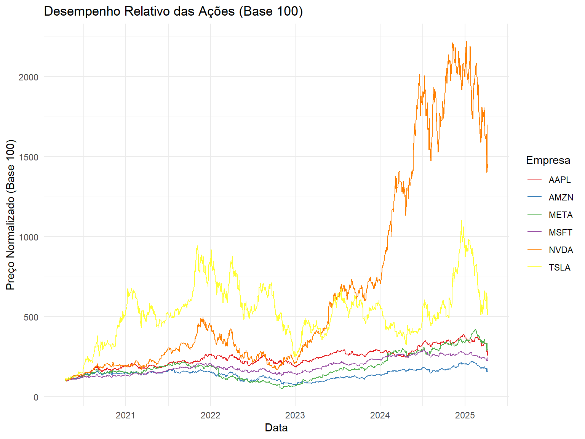
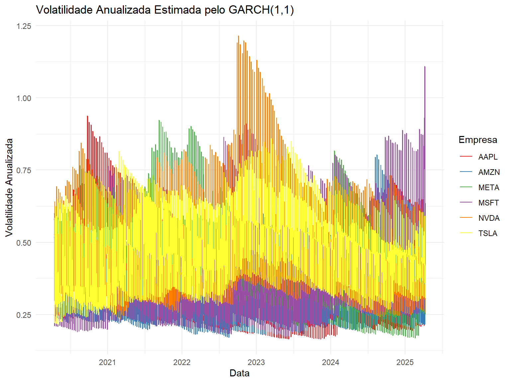
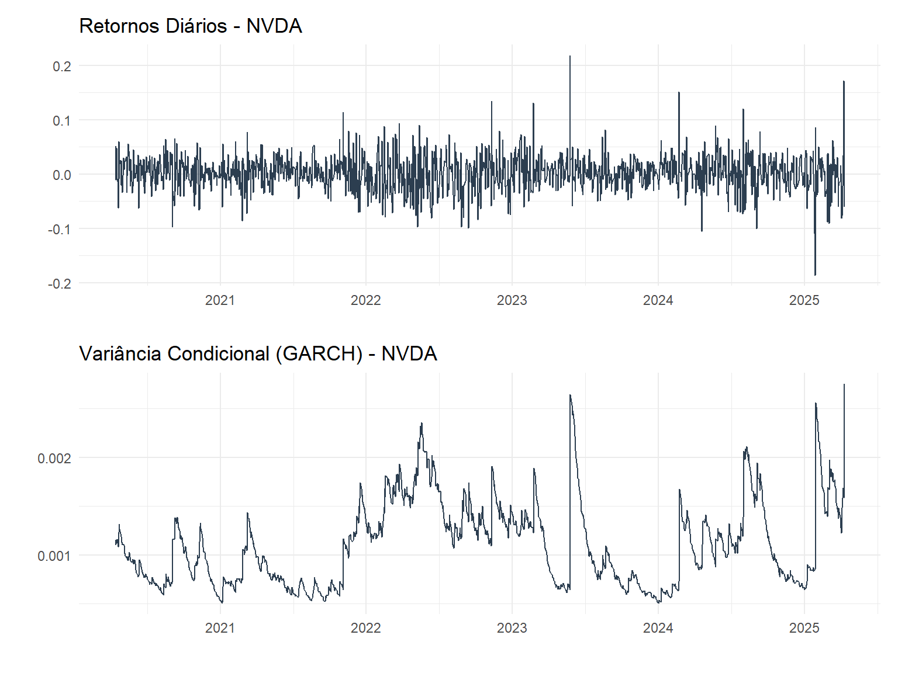

Vamos baixar dados de ações das principais empresas de tecnologia para os últimos 5 anos.
Code
# Definir os tickers das empresas de tecnologiatickers <-c("NVDA", "AAPL", "TSLA", "META", "AMZN", "MSFT")# Definir período: últimos 5 anosstart_date <-Sys.Date() -years(5)end_date <-Sys.Date()# Baixar os dados do Yahoo FinancegetSymbols(tickers, src ="yahoo", from = start_date, to = end_date)
[1] "NVDA" "AAPL" "TSLA" "META" "AMZN" "MSFT"
Code
# Selecionar o fechamento ajustado (Adj.Close) e juntar em um único data frameprice_list <-lapply(tickers, function(sym) Ad(get(sym)))tech_prices <-do.call(merge, price_list)colnames(tech_prices) <- tickerstech_prices <-na.omit(tech_prices)tech_prices <-tk_tbl(tech_prices, preserve.row.names =TRUE, rename_index ="date")tech_prices$date <-as.Date(tech_prices$date)# Exibir as primeiras linhas do dataframehead(tech_prices)
# Convertendo para formato longo para melhor visualizaçãoprices_long <- tech_prices %>%pivot_longer(-date, names_to ="Ativo", values_to ="Preco")# Plotando os preçosprices_long %>%group_by(Ativo) %>%plot_time_series(.date_var = date,.value = Preco,.title ="Preços de Fechamento Ajustados das Ações de Tecnologia",.facet_ncol =2,.interactive =FALSE )
Normalizando os preços (Base 100)
Para melhor comparar o desempenho relativo das ações ao longo do tempo:
Code
# Normalizar os preços (Base 100)normalized_prices <- tech_prices %>%mutate(across(-date, ~.x /first(.x) *100))# Converter para formato longonormalized_long <- normalized_prices %>%pivot_longer(-date, names_to ="Ativo", values_to ="Preco_Normalizado")# Plotar os preços normalizadosggplot(normalized_long, aes(x = date, y = Preco_Normalizado, color = Ativo)) +geom_line() +labs(title ="Desempenho Relativo das Ações (Base 100)",x ="Data",y ="Preço Normalizado (Base 100)",color ="Empresa" ) +theme_minimal() +scale_color_brewer(palette ="Set1")

Calculando os Log-Retornos
Code
# Calculando os log-retornoslog_returns <- tech_prices %>%mutate(across(-date, ~log(.x /lag(.x)))) %>%na.omit()# Convertendo para formato longo para visualizaçãoreturns_long <- log_returns %>%pivot_longer(-date, names_to ="Ativo", values_to ="Retorno")# Plotando os retornosreturns_long %>%group_by(Ativo) %>%plot_time_series(.date_var = date,.value = Retorno,.title ="Log-Retornos Diários das Ações de Tecnologia",.facet_ncol =2,.interactive =FALSE,.smooth =FALSE )
Análise das Distribuições dos Retornos
Code
# Plotando histogramas dos retornoslibrary(timetk) # Make sure this is loaded# Plotando histogramas dos retornosreturns_long %>%ggplot(aes(x = Retorno, fill = Ativo)) +geom_density(alpha =0.5) +facet_wrap(~ Ativo, ncol =2) +theme_minimal() +labs(title ="Distribuição dos Log-Retornos")
Boxplot dos Retornos para Identificação de Outliers
Code
# Boxplot dos retornosggplot(returns_long, aes(x = Ativo, y = Retorno)) +geom_boxplot() +labs(title ="Boxplot dos Log-Retornos Diários",x ="Empresa",y ="Log-Retorno" ) +theme_minimal() +theme(axis.text.x =element_text(angle =45, hjust =1))
Correlação entre os Retornos das Ações
Code
# Calculando a matriz de correlaçãocor_matrix <- log_returns %>%select(-date) %>%cor()# Visualizando a matriz de correlaçãocor_df <-as.data.frame(cor_matrix)cor_df$Stock1 <-rownames(cor_df)cor_long <- cor_df %>%pivot_longer(-Stock1, names_to ="Stock2", values_to ="Correlation")# Plotando o heatmapggplot(cor_long, aes(x = Stock1, y = Stock2, fill = Correlation)) +geom_tile() +scale_fill_gradient2(low ="blue", mid ="white", high ="red",midpoint =0, limits =c(-1, 1) ) +geom_text(aes(label =round(Correlation, 2)), color ="black", size =3) +labs(title ="Matriz de Correlação dos Log-Retornos",x ="", y ="" ) +theme_minimal() +theme(axis.text.x =element_text(angle =45, hjust =1),panel.grid =element_blank() )
Volatilidade com Abordagem Tradicional (Janela Móvel)
Code
# Definindo diferentes tamanhos de janelawindow_sizes <-c(5, 21, 63) # 1 semana, 1 mês, 3 meses de negociação# Função para calcular volatilidade anualizadacalculate_annualized_vol <-function(returns, window_size) {# Aplicando rollapply para calcular a volatilidade na janela móvel vol_rolling <-rollapply(returns, width = window_size, FUN = sd, fill =NA, align ="right")# Anualizar a volatilidade (multiplicando por raiz de 252 dias de negociação por ano) vol_annualized <- vol_rolling *sqrt(252)return(vol_annualized)}# Calculando volatilidade para diferentes janelasvol_results <-list()for (size in window_sizes) {# Aplicando a função para cada coluna de retornos vol_df <- log_returns %>%mutate(across(-date, ~calculate_annualized_vol(.x, size)))# Convertendo para formato longo vol_long <- vol_df %>%pivot_longer(-date, names_to ="Ativo", values_to ="Volatilidade") %>%mutate(Janela =paste0(size, " dias")) vol_results[[as.character(size)]] <- vol_long}# Combinando os resultadosvol_all <-bind_rows(vol_results)# Plotando a volatilidade anualizada para diferentes janelasvol_all %>%filter(!is.na(Volatilidade)) %>%ggplot(aes(x = date, y = Volatilidade, color = Ativo)) +geom_line() +facet_wrap(~ Janela, scales ="free_y") +labs(title ="Volatilidade Anualizada com Diferentes Janelas Móveis",x ="Data",y ="Volatilidade Anualizada",color ="Empresa" ) +theme_minimal() +scale_color_brewer(palette ="Set1")
Volatilidade com GARCH(1,1)
Code
# Especificação do modelo GARCH(1,1) com distribuição t-Studentspec <-ugarchspec(variance.model =list(model ="sGARCH", garchOrder =c(1, 1)),mean.model =list(armaOrder =c(0, 0), include.mean =TRUE),distribution.model ="std")# Lista dos ativos (exceto a coluna "date")ativos <-colnames(log_returns)[-1]# Data frame para armazenar as volatilidades GARCHvar_condicional <-tibble(date = log_returns$date)# Data frame para os parâmetros do modeloparams_list <-list()# Loop para estimar os modelos para cada ativofor (ativo in ativos) {# Extrair os dados do ativo data_ativo <- log_returns[[ativo]]# Ajustar o modelo GARCH fit <-ugarchfit(spec = spec, data = data_ativo, solver ='hybrid', silent =TRUE)# Extrair volatilidade condicional (variância) var_cond <-sigma(fit)^2 var_condicional[[ativo]] <- var_cond# Extrair os parâmetros par <-coef(fit) alpha <- par["alpha1"] beta <- par["beta1"] alpha_beta_sum <- alpha + beta interp <-ifelse(alpha_beta_sum >=0.9,sprintf("Alta persistência (α+β = %.4f)", alpha_beta_sum),sprintf("Baixa/moderada persistência (α+β = %.4f)", alpha_beta_sum)) params_list[[ativo]] <-tibble(Ativo = ativo,mu = par["mu"],omega = par["omega"],alpha = alpha,beta = beta,`alpha+beta`= alpha_beta_sum,nu = par["shape"],Interpretacao = interp )}# Combinar os parâmetros em um único data framegarch_params <-bind_rows(params_list)
Parâmetros do Modelo GARCH(1,1)
Code
# Exibir tabela de parâmetrosdatatable(garch_params, options =list(pageLength =10, scrollX =TRUE))
Code
# Visualizar a persistência (alpha + beta)ggplot(garch_params, aes(x = Ativo, y =`alpha+beta`, fill = Ativo)) +geom_bar(stat ="identity") +geom_hline(yintercept =0.9, linetype ="dashed", color ="red") +labs(title ="Persistência da Volatilidade (α+β)",subtitle ="Valores próximos a 1 indicam alta persistência dos choques",x ="Empresa",y ="α+β" ) +theme_minimal() +theme(axis.text.x =element_text(angle =45, hjust =1)) +scale_fill_brewer(palette ="Set1")
# Calcular a volatilidade anualizada a partir da variância condicionalvolatility_garch <- var_condicional %>%mutate(across(-date, ~sqrt(.x) *sqrt(252))) # Anualização (sqrt(252) dias de negociação)# Converter para formato longovol_garch_long <- volatility_garch %>%pivot_longer(-date, names_to ="Ativo", values_to ="Volatilidade_Anualizada")# Plotar a volatilidade anualizadaggplot(vol_garch_long, aes(x = date, y = Volatilidade_Anualizada, color = Ativo)) +geom_line() +labs(title ="Volatilidade Anualizada Estimada pelo GARCH(1,1)",x ="Data",y ="Volatilidade Anualizada",color ="Empresa" ) +theme_minimal() +scale_color_brewer(palette ="Set1")

Comparação: Retornos vs. Volatilidade GARCH
Vamos escolher NVDA (NVIDIA) para demonstrar a relação entre retornos e volatilidade condicional:
Code
# Selecionar os dados para "NVDA"returns_nvda <- log_returns %>%select(date, NVDA) %>%rename(Return = NVDA)vol_nvda <- var_condicional %>%select(date, NVDA) %>%rename(Garch_Vol = NVDA)# Plot de retornosp_returns <- returns_nvda %>%plot_time_series( date, Return, .title ="Retornos Diários - NVDA", .interactive =FALSE, .smooth =FALSE ) +theme_minimal()# Plot de volatilidade GARCHp_vol <- vol_nvda %>%plot_time_series( date, Garch_Vol, .title ="Variância Condicional (GARCH) - NVDA", .interactive =FALSE, .smooth =FALSE ) +theme_minimal()# Combinar os dois gráficos verticalmentep_returns / p_vol

Comparação entre Abordagens de Volatilidade
Vamos comparar a volatilidade tradicional (janela móvel) com a volatilidade GARCH para NVDA:
Hull, J. C. (2018). Options, Futures, and Other Derivatives (10th ed.). Pearson.
Engle, R. F. (2002). Dynamic Conditional Correlation: A Simple Class of Multivariate GARCH Models. Journal of Business & Economic Statistics, 20(3), 339-350.